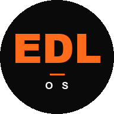

«Не вижу, куда уплывает маржа»
↓ решениеBig Tech operations — практика Google, Amazon, McKinsey: «no metric, no management». Маржа на уровне каждого клиента, каждого проекта, ежедневно.
Все цифры, риски и решения вашего бизнеса — в одном месте. Утренняя сводка в Telegram + ИИ-консультант под рукой. Без дашбордов, без новых паролей, без IT-отдела.

Выберите нишу выше — и я покажу, как EDL общается с владельцем по утрам.
Нажмите, чтобы получить утреннюю сводку — как её получает собственник в этой нише.
Маржа по проектам апреля: -2.1 п.п. к плану. Убыточные: 3 из 24. Главный — клиент Z.
🔥 HOT-сделки: Петров (1.2М) без касания 28 ч — открыть?
Сегодня: 2 защиты, 1 КП на согласовании.
Контракт ООО «Стройбаза» 1.2М — отгрузка завтра, аванс не пришёл (6 дней).
Прибыль по контрактам: 3 из 17 ниже порога после НДС.
Рекомендация: пересмотр цен на 3 контрактах.
Новых заявок сегодня: 47 (+25 % к норме пятницы).
🔥 HOT: 4 продавца > 5М/мес — ответить сегодня.
Бот отфильтровал 89 мусорных. Команда: Алина перегружена ×1.4.
НДС 22 % съел 4 % маржи по оптовикам за месяц.
Дебиторка: Завод X торчит 1.5М уже 40 дней.
Сборка счетов за вчера: 14 оплат на 3.2М.
Не «ещё одна теория». EDL OS — синтез трёх управленческих традиций, каждая с десятилетиями практики.
«Не вижу, куда уплывает маржа»
↓ решениеBig Tech operations — практика Google, Amazon, McKinsey: «no metric, no management». Маржа на уровне каждого клиента, каждого проекта, ежедневно.
«Нет времени думать стратегически»
↓ решениеМетодология CRAFT — Центр CRAFT, школа инноваций ИКРА, идеи Бруно Латура. Стратегия как недельные ставки, а не как абстрактный документ.
«Не понимаю, где граница с ИИ»
↓ решениеAI Fluency Framework — Anthropic, UCC, Ringling. Не «использовать ИИ везде», а рамка из 4 компетенций: когда автоматизировать, когда оставить человеку.
Founder OS = синтез этих трёх подходов. Четыре слоя — Стратегия, Воронка, Операционка, Деньги — собраны в одну сводку и одного ИИ-консультанта.
Подробно про методологию Founder OS →Не нужно заходить в 10 систем. EDL собирает всё в одну выжимку.
С 2026 — НДС 22%, антидробление, новые отчёты. Цены поднял — клиенты ушли. Не поднял — съело прибыль.
EDL показывает реальную прибыль по каждому контракту после НДС. Видно, где маржа просела и какие 3 контракта пересмотреть первыми.
CRM отдельно, таблицы отдельно, 1С отдельно. Цельной картины нет нигде.
EDL собирает данные из ваших систем в одну сводку. Вместо 10 вкладок — 1 сообщение в Telegram утром.
В отчёте плюс, на счёте — кассовый разрыв. Понять, где просела прибыль — на ощущениях.
EDL прогнозирует прогноз остатка денег на 30/60/90 дней. Кассовый разрыв виден за 3 недели до того, как случится.
Не видно, кто перегружен, а кто простаивает. Джуны уходят за 6 месяцев — найм и адаптация съедают больше, чем экономит автоматизация. Сильные тянут всё на себе и выгорают.
EDL показывает реальную загрузку каждого, подсвечивает риск текучки за 2–3 недели и автоматизирует 2–3 часа рутины в день на сотрудника.
Мы не заменяем ваши системы — собираем из них пульт управления для владельца. Если вашего стека нет в списке — интегрируемся через API за 2-5 дней.
Все данные остаются у вас. EDL не имеет доступа к налоговой отчётности и не передаёт ничего третьим сторонам. Показывает прибыль, остаток и прогноз в реальном времени.
Не заменяет CRM. Вытаскивает ключевые цифры: конверсия, pipeline, забытые сделки. Интеграция за 2-5 дней.
Не заменяет базы знаний. Собирает из них метрики и добавляет сводки в Telegram автоматически.
Подключает ИИ к вашим данным. Не нужно писать промпты и копировать цифры — система уже знает контекст.
Ваш ИИ-ассистент будет знать всё о вашем бизнесе — потому что работает на ваших данных, а не «вообще». Нажмите на вопрос, чтобы увидеть, как он отвечает.
14 человек · ~80М ₽/год · 3 месяца на EDL OS
Следующие пилоты — услуги и производство, июнь-июль 2026.
Запись на лист ожидания →Мы сами строили операционку в B2B и финтехе. Теперь делаем продукт, которого нам не хватало.


От 15 минут диагностики до полной интеграции. Каждый шаг — самостоятельный результат, не воронка ради воронки.
12 вопросов ИИ-консультанту по 4 слоям Founder OS. В конце — Score 0-100, сравнение с benchmark по отрасли и 2-3 точки роста. Без регистрации.
20 вопросов в Telegram-боте @edl_os_bot (можно прерваться) + ИИ-обработка с финальной проверкой Кати. PDF на 10 стр (Base) или 15 стр (Plus) с разбором по 4 слоям, 5–7 рекомендациями и разделом «НДС-флажок 2026». Plus включает персональное видео от Кати за 24 часа. Оплата картой в боте. Безусловный возврат 14 дней.
Купить чекапКраткое руководство «EDL OS · продуктовая лестница» — 4 страницы. Сравнительная таблица, дерево решения, 3 шага до первого результата. Можно переслать партнёру или руководству.
Наш mcp-server-core открыт под MIT — форкайте, аудитьте, разворачивайте у себя. Бизнес-логика и production-коннекторы (1С, amoCRM, Битрикс, Геткурс) — наша IP, доступны по подписке.
Вы не «попадаете в вендор-лок»: если уйдёте, всё, что собрали — останется у вас.
Mini-Чекап (Founder OS Score) — это бесплатный 15-минутный self-service. 12 вопросов в боте или веб-виджете, моментальный Score 0-100 и 2-3 точки роста. Можно пройти прямо сейчас, без регистрации.
Бизнес-чекап — это глубокий аудит вашего бизнеса. 20 структурированных вопросов в боте @edl_os_bot (1-2 часа, можно прерваться), 24 часа на ИИ-обработку с финальной проверкой Кати. На выходе:
Всё без звонков. Оплата картой прямо в боте. Безусловный возврат 14 дней — один клик /refund в боте.
Антидробление — когда ФНС считает несколько юр.лиц одним бизнесом для целей налогообложения. Маркеры: синхронность оборотов по связанным юр.лицам, дробление вокруг лимита УСН, общие сотрудники и инфраструктура (ст. 54.1 НК РФ).
EDL OS показывает экономику «как есть»: прибыль по каждому юр.лицу и консолидированно. Система подсвечивает, если оборот по двум юр.лицам растёт синхронно или приближается к лимиту.
Что EDL OS НЕ делает: не даёт советов по уклонению, не передаёт данные третьим сторонам, не имеет доступа к налоговой отчётности.
Все данные на вашей инфраструктуре. EDL не имеет доступа к налоговой отчётности и не передаёт данные третьим сторонам. NDA подписываем стандартно. Если вы захотите остановить работу — все данные, интеграции и код остаются у вас, система продолжает работать автономно.
Да. Система горизонтальная — подстраивается под вашу специфику. Сейчас в бете — маркетплейс-сервисы. Услуги и производство — пилоты июнь-июль 2026.
Если вашего стека нет в списке (1С, Битрикс, amoCRM, Google Sheets, TG-боты) — интегрируемся через API за 2-5 дней.
Бизнес-чекап: безусловный возврат 100 % оплаты в течение 14 календарных дней с момента передачи материалов. Причину указывать не нужно — один клик /refund в Telegram-боте. Деньги возвращаем тем же способом, которым была получена оплата, в течение 5 рабочих дней.
Спринт: защиты каждые 7–10 дней. Если после 2-й защиты видно, что не подходит — останавливаем. Оплата поэтапная. 30 дней пост-Спринт поддержки включены.
Полная юридическая формулировка — в оферте.
EDL OS — это синтез трёх управленческих традиций: Big Tech operations (McKinsey, Google, Amazon), методология CRAFT (ИКРА, идеи Бруно Латура) и AI Fluency Framework (Anthropic, UCC, Ringling).
Подробно с источниками и логикой синтеза — на странице /methodology.
Запуск 23 мая 2026. Мы выкатываем MCP-сервер (Model Context Protocol) — подключается за 3 шага к Claude Desktop, Cursor, ChatGPT Desktop и Gemini CLI. Тот же Mini-Чекап (Founder OS Score) работает внутри вашего AI-инструмента, OAuth 2.1.
Инструкция: /try-in-claude. Open source core — github.com/edl-os/mcp-server-core (MIT).
Сырые данные бизнеса (имена клиентов, ИНН, содержимое 1С/amoCRM, финансовые отчёты, переписки) — физически у вас. Мы их не копируем и не храним.
У нас хранятся: ваш Telegram ID, email (только если купили Чекап или оставили на сайте), история диалогов в @edl_os_bot, audit-log всех доступов к данным. Всё под 152-ФЗ архитектурно — каждое поле, потенциально содержащее персональные данные, маскируется перед обработкой ИИ. Команды /delete_my_data и /export_my_data в боте — для удаления и выгрузки всех ваших данных за 24 часа.
За 24 часа получите карту своего бизнеса по 4 слоям EDL OS:
Безусловный возврат 100 % оплаты в течение 14 календарных дней с момента передачи материалов — один клик /refund в боте, причину указывать не нужно.
Не готовы? Подпишитесь на Telegram-канал — методология, кейсы, разборы → t.me/edl_os